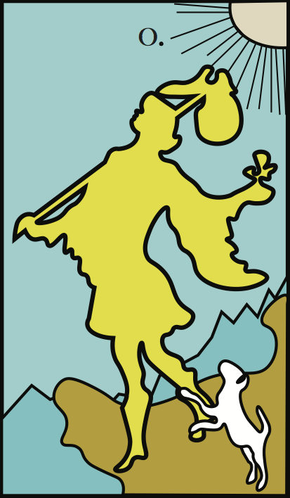
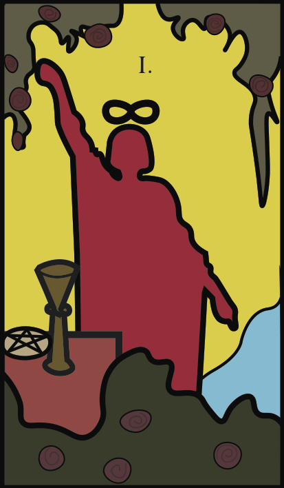
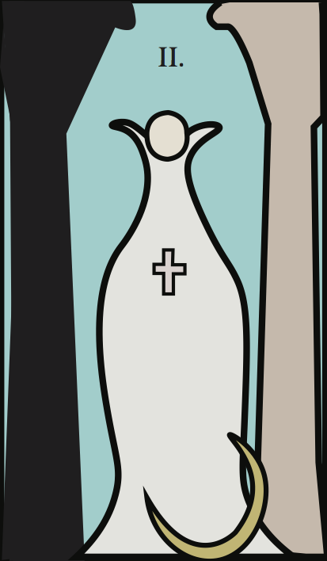
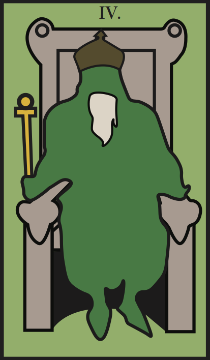

Explore the Major Arcana
Tarot decks are comprised of 22 Major Arcana cards and 56 Minor Arcana cards. Consisting of 21 numbered cards and 1 unnumbered (0 - "the Fool") card, the Major Arcana cards are often called trump cards because they represent significant life events and generally impart greater weight than their Minor Arcana counterparts. It is important to recognize when a Major Arcana card is drawn as it may suggest that you are going through an important event in your life. The cards depict universal aspects of the human experience, however, they take on different meanings depending on what question is asked, where they occur in your spread, and whether they appear right-side-up or upside-down. Hover over each of the Major Arcana cards to learn more about them.

0 FOOL
Upright: Beginnings, innocence, spontaneity, free spirit
Reversed: Naivety, foolishness, recklessness, risk-taking
Upright: Beginnings, innocence, spontaneity, free spirit
Reversed: Naivety, foolishness, recklessness, risk-taking

1 Magician
Upright: Power, skill, concentration, action, resourcefulness
Reversed: Manipulation, poor planning, latent talents
Upright: Power, skill, concentration, action, resourcefulness
Reversed: Manipulation, poor planning, latent talents

2 High Priestess
Upright: Intuition, higher powers, mystery, subconscious
Reversed: Hidden agendas, need to listen to inner voice
Upright: Intuition, higher powers, mystery, subconscious
Reversed: Hidden agendas, need to listen to inner voice
3 Empress
Upright: Fertility, femininity, beauty, nature
Reversed: Creative block, dependency on others
Upright: Fertility, femininity, beauty, nature
Reversed: Creative block, dependency on others

4 Emperor
Upright: Authority, father-figure, structure
Reversed: Domination, excessive contorl, rigidity, inflexibility
Upright: Authority, father-figure, structure
Reversed: Domination, excessive contorl, rigidity, inflexibility